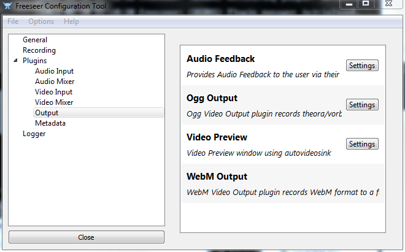
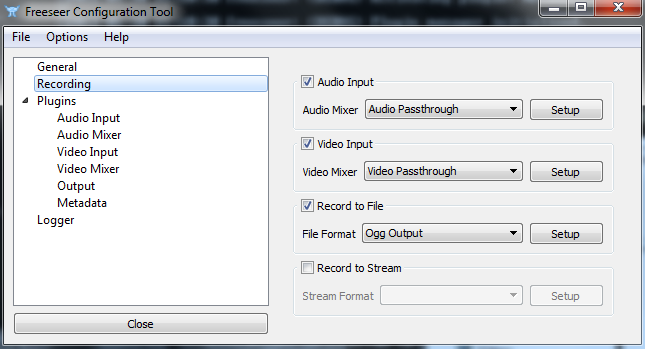

Wanted to post a quick update on some Config Tool UI changes I’ve been working on in Freeseer experimental. The UI used to be a bit confusing where one would have to activate a plugin and then move to the “General” tab to configure the active plugins which turned out to be quite a few unnecessary steps.
I decided to remove the whole “activate / deactivate” function in the tool. Now instead of needing to activate plugins the tool will just load any plugins it finds which removes the whole step of activating plugins. The below image shows the new plugin screen which removes the checkbox for activating / deactivating plugins. The purpose of this screen now is to simply show you which plugins exist on your system.

We used to have some video options in the “General” tab but that has now been moved to a new tab “Recording” which adds a few new options as shown below.

Audio / Video input dropdown boxes will now show all mixer plugins that exist on the system (in the past it only loaded activated plugins). Clicking Setup will allow you to configure the specific inputs to use and other video mixer settings.
What’s new here though is the options to Record to a File (default: enabled) and Record to Stream (default: disabled). The dropdown boxes will allow the user select the output plugins for each category (in the past this was done by activating / deactivating the output plugin). I think this new layout makes Freeseer a little bit more intuitive to configure.
What this means for plugin developers though is that when designing output plugins there is a new variable which needs to be configured recordto. This variable can be set to IOutput.FILE or IOutput.STREAM via static variables defined in the plugin module. For example.
recordto = IOutput.FILE
Details on the specific commit can be found at:
https://github.com/Freeseer/freeseer/compare/727c089...ab78cf4